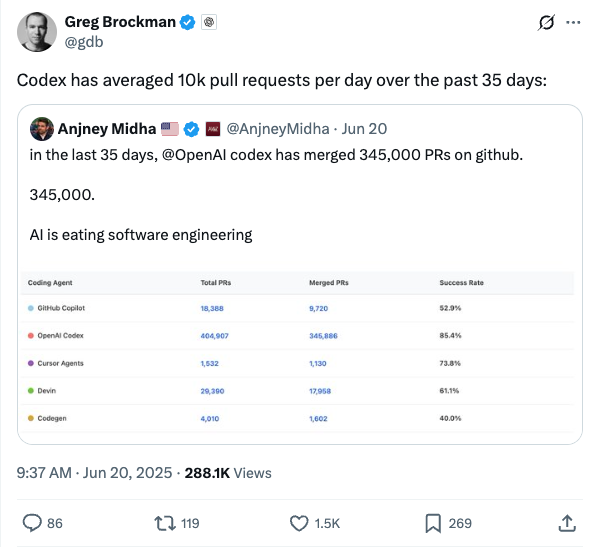
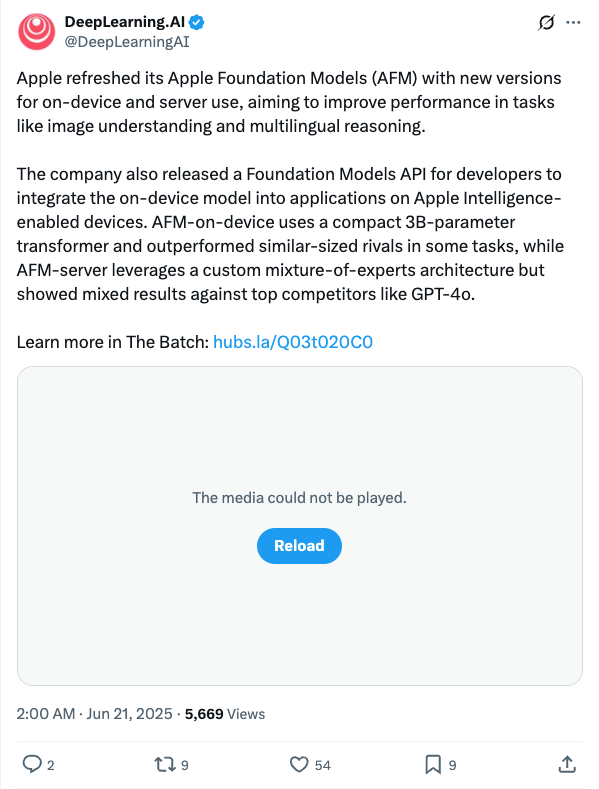
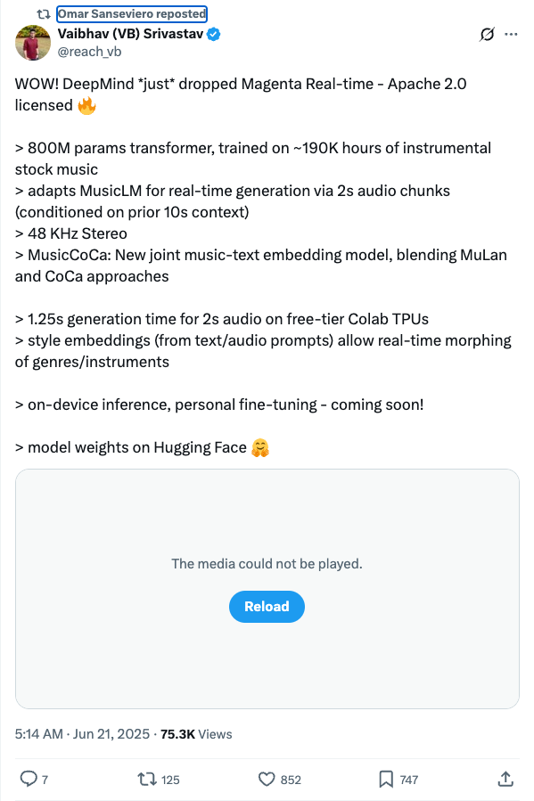
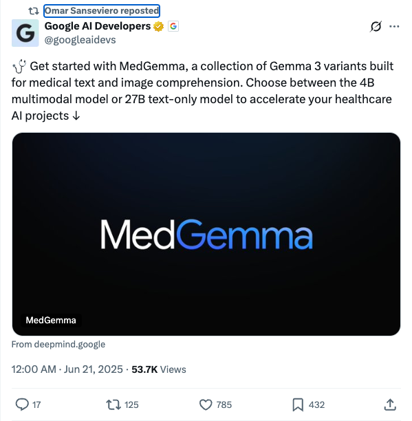
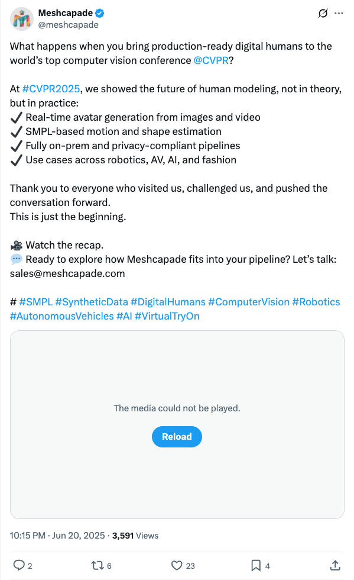
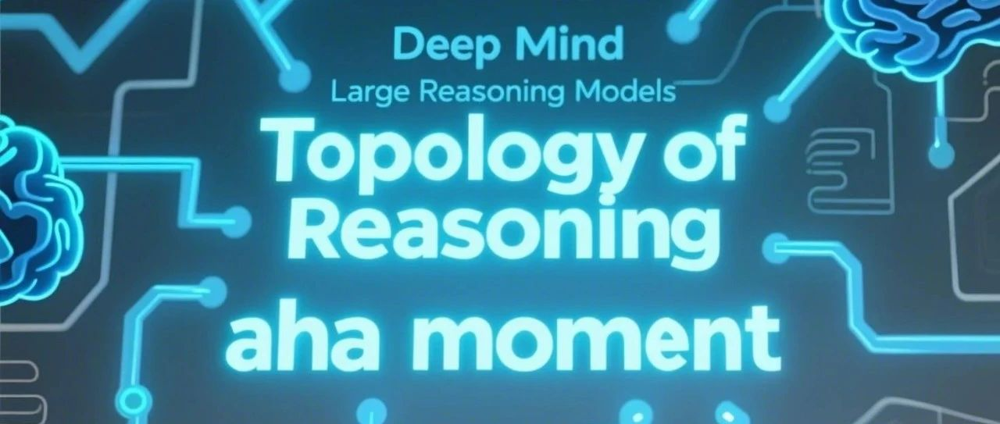
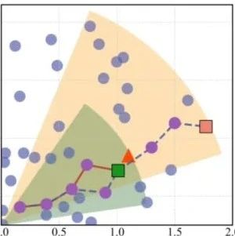
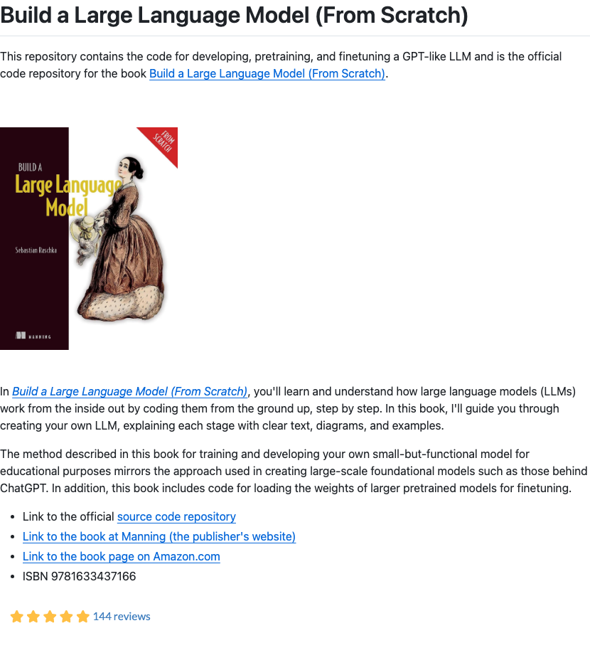

Twitter
gdb_OpenAI Codex Averages 10K PRs Daily, AI Transforms Software Engineering
Published: 2025-06-20T01:37:12.000Z

OpenAI co-founder Greg Brockman quoted Anjney Midha's tweet, revealing that OpenAI Codex has merged 345,000 pull requests on GitHub over the past 35 days, averaging 10,000 per day. This impressive statistic highlights the increasing impact of artificial intelligence in software engineering, signaling that AI is profoundly transforming software development paradigms.
DeepLearningAI_Apple Updates Foundation Models, Enhancing On-Device and Server AI Performance
Published: 2025-06-20T18:00:02.000Z

Apple has refreshed its Apple Foundation Models (AFM) with new versions for on-device and server use, aiming to improve performance in tasks like image understanding and multilingual reasoning. The company also released a Foundation Models API for developers. The on-device AFM, utilizing a compact 3B-parameter transformer, outperformed similar-sized rivals in some tasks. Conversely, the server-side AFM, leveraging a custom mixture-of-experts architecture, showed mixed results when compared against top competitors such as GPT-4o.
reach_vb_DeepMind Launches Magenta Real-time Music Generation Model
Published: 2025-06-20T21:14:25.000Z

DeepMind has launched Magenta Real-time, an Apache 2.0 licensed music generation model with over 800 million parameters. Trained on approximately 190,000 hours of instrumental stock music, it adapts MusicLM for real-time generation using 2-second audio chunks conditioned on 10-second prior context. The model introduces MusicCoCa, a joint music-text embedding model, and supports style embeddings for real-time genre/instrument morphing. It achieves 1.25-second generation for 2-second audio on free-tier Colab TPUs, with model weights available on Hugging Face.
MiniMax__AI_Launches Breakthrough Voice Generation Technology
Published: 2025-06-20T17:27:21.000Z
During "MiniMax Week," MiniMax unveiled "Audio Dessert," a breakthrough in voice generation technology. This innovation enables users to create speech with any prompt, any voice, and any emotion. It offers full customizability and multilingual support, significantly enhancing the flexibility and expressiveness of voice synthesis and poised to revolutionize AI voice applications.
osanseviero_Google AI Releases Medical AI Model MedGemma
Published: 2025-06-20T16:00:01.000Z

Google AI Developers have officially launched MedGemma, a new collection of Gemma 3 variant models specifically optimized for medical text and image comprehension tasks. MedGemma is available in two distinct versions: a 4B multimodal model, capable of processing both text and images, and a 27B text-only model. This strategic release aims to significantly accelerate the development and deployment of AI projects within the healthcare sector, providing researchers and developers with powerful, efficient, and specialized AI tools to advance medical applications.
meshcapade_Showcases Future of Digital Human Modeling at CVPR2025
Published: 2025-06-20T14:15:29.000Z

Meshcapade showcased its production-ready digital human technology at CVPR 2025, revealing the future of human modeling. This technology enables real-time avatar generation from images and video, utilizes SMPL-based motion and shape estimation, and offers fully on-premise, privacy-compliant pipelines. Its applications span robotics, autonomous vehicles, artificial intelligence, and fashion.
wechat
Andrej Karpathy's Latest Speech Goes Viral: The Era of Software 3.0 Has Arrived!
Published: 2025-06-20T16:02:17.000Z
Andrej Karpathy, a founding member of OpenAI and former Director of AI at Tesla, recently delivered a highly influential speech titled "Software in the era of AI" at Y Combinator's AI Startup School, which has garnered widespread attention and discussion. In his address, Karpathy articulated a profound paradigm shift occurring in software development, asserting that the era of "Software 3.0" is now upon us, fundamentally driven by artificial intelligence. As a figure who significantly shaped the golden age of deep learning, his pronouncements consistently spark extensive discussion and reflection within the technical community, revealing the deep transformations AI is bringing to the industry. This latest presentation further solidifies his role as a visionary, offering critical insights into how AI is reshaping the very foundations of software engineering and development, moving from explicit programming to more data-driven and model-centric approaches. His perspective is essential for comprehending the future direction of AI-powered systems and their integration into evolving software paradigms.
The Agentic AI Moment: Multi-Agent Systems Drive the 'One-Person Company' Revolution
Published: 2025-06-20T10:39:07.000Z
The article underscores the rapid advancement and burgeoning era of Agentic AI, a technology enabling AI to independently perceive environments, utilize various tools, and execute complex tasks, thereby evolving AI capabilities from simple "question-answering" to proactive "doing." Amazon Web Services (AWS) is at the forefront, offering a comprehensive full-stack technical framework, including Amazon Bedrock, Amazon Q Developer, and Amazon Transform. These tools empower enterprises to rapidly develop AI applications, modernize legacy codebases, and achieve substantial productivity improvements. Real-world examples, such as Fosun Pharma's accelerated medical writing and HOHO Information's efficient document processing, illustrate significant cost reductions and efficiency gains in knowledge-intensive domains. The article posits that Agentic AI is a pivotal turning point, potentially leading to the rise of "one-person companies" and fundamentally reshaping traditional IT systems. AWS has strategically positioned Agentic AI as a future multi-billion dollar business, actively driving its innovation and widespread adoption.
DeepMind Uncovers R1's Secret: 'Aha Moments' Revealed and Quantifiable for the First Time!
Published: 2025-06-20T13:24:45.000Z

A joint research team from the University of Tokyo and Google DeepMind has for the first time visualized the internal thought processes of reasoning models like DeepSeek-R1 using "reasoning graphs," unveiling the mechanisms behind their impressive intelligence. The study reveals that the models' self-correction "aha moments" manifest as distinct cyclic structures within these graphs, quantifiable as an average of approximately five "reconsiderations" per problem. Reasoning graphs also demonstrate that advanced reasoning models, compared to foundational models, exhibit more loops, larger graph diameters, and small-world network characteristics. These topological structures are crucial for their efficient inference and error correction capabilities. Furthermore, high-quality training data significantly expands the reasoning graph's diameter. This groundbreaking research offers a novel perspective for understanding and enhancing AI's reasoning abilities, suggesting that future AI architectures will be designed based on the topological essence of intelligence.
SIGGRAPH 2025 | Large Avatar Model: Single-Image Second-Level Creation of Hyper-Realistic 3D Interactive Digital Humans with Cross-Platform Real-time Driven Rendering
Published: 2025-06-20T10:39:07.000Z
Alibaba Tongyi Lab introduces the Large Avatar Model (LAM), designed to generate animatable, hyper-realistic 3D Gaussian digital humans from a single image within seconds. This model overcomes the limitations of traditional methods, which rely on multi-view data and complex post-processing, by employing novel techniques such as normalized space Gaussian sphere generation, a multi-modal feature interaction Transformer, and mesh subdivision. LAM achieves lightweight, cross-platform, real-time driven rendering, supporting WebGL with up to 120 FPS on mobile devices. It directly integrates with traditional graphics pipelines, eliminating the need for neural post-processing. Furthermore, LAM can be combined with large models for text-driven generation and 3D style transfer. This technology has been applied to build low-latency, low-cost interactive conversational digital human solutions, which are now fully open-sourced, offering a new paradigm for applications in virtual meetings, game development, and beyond.
RAG Efficiency Soars 30% with Just 2 Lines of Code! Applicable to Various Tasks, Scalable to Billions of Data
Published: 2025-06-20T16:02:17.000Z

A groundbreaking new open-source method, PSP (Proximity graph with Spherical Pathway), developed by a collaborative team from Zhejiang University and vector retrieval expert Fu Cong, has achieved a remarkable 30% boost in RAG (Retrieval-Augmented Generation) vector retrieval efficiency with just two lines of code modification. This innovative approach directly tackles the long-standing "metric mismatch" problem prevalent in maximum inner product search. PSP theoretically demonstrates that existing graph index structures, primarily designed for Euclidean distances, can be leveraged to find globally optimal maximum inner product solutions through a refined greedy search algorithm. Furthermore, PSP introduces an adaptive early stopping strategy, which intelligently determines when to conclude a search, thereby significantly accelerating retrieval speed and minimizing computational redundancy. The method exhibits robust generalization capabilities, proving effective across diverse data modalities such as text-to-text, image-to-image, and text-to-image search, as well as recommendation systems. Crucially, PSP showcases exceptional scalability, demonstrating near-logarithmic time complexity, making it highly suitable for deployment in applications involving billions of data points. This advancement represents a significant leap forward for vector retrieval, a core technological component underpinning many cutting-edge AI products, promising enhanced performance and broader applicability.
Tsinghua University Releases Sundial: The First Trillion-Timestamp Pre-trained Generative Time Series Large Model | ICML Oral
Published: 2025-06-20T04:05:05.000Z
Tsinghua University has unveiled Sundial, a generative time series large model, with its research accepted as an Oral paper at ICML 2025. This pioneering model marks the first to achieve trillion-timestamp pre-training and has established TimeBench, the largest time series dataset in the field. Sundial effectively addresses the non-determinism and mode collapse issues inherent in time series forecasting by incorporating a flow-matching-based prediction loss function. This innovation enables the model to generate multiple prediction trajectories and provide robust probabilistic forecasting capabilities. Compared to traditional methods and existing deep learning models, Sundial demonstrates exceptional zero-shot prediction performance across various benchmarks, boasting millisecond-level inference speeds. This breakthrough offers an out-of-the-box, highly efficient forecasting solution for diverse sectors such as meteorology, finance, and the Internet of Things, significantly expanding the potential applications of time series models.
GitHub
Build a Large Language Model (From Scratch)
Published: 2025-06-22T21:36:39Z

This GitHub repository serves as the official code companion for the book "Build a Large Language Model (From Scratch)," guiding users through the process of developing, pretraining, and finetuning GPT-like large language models from the ground up. The project offers a step-by-step coding approach to deeply understand LLM mechanics, including functionalities for loading and finetuning pretrained model weights. Its methodology mirrors that of large-scale foundational models, yet the code is designed to run efficiently on conventional laptops without requiring specialized hardware, making it ideal for educational purposes and developers seeking a profound understanding of LLMs.
AI Engineering Hub 🚀
Published: 2025-06-22T06:10:52Z

The "AI Engineering Hub" GitHub repository serves as a comprehensive resource for individuals looking to advance their skills in the rapidly evolving field of AI engineering. It offers in-depth tutorials focusing on critical areas such as Large Language Models (LLMs) and Retrieval-Augmented Generation (RAGs), alongside practical examples of real-world AI agent applications. Designed for beginners, practitioners, and researchers alike, this hub provides hands-on experience and scalable solutions to implement and adapt in various projects. By offering a blend of theoretical understanding and practical application, the repository empowers users to stay at the forefront of AI innovation, fostering experimentation and enabling successful deployment of advanced AI systems. It is an essential toolkit for anyone aiming to master the complexities of modern AI development.
Claude Code
Published: 2025-06-18T20:29:20Z

Claude Code, an innovative agentic coding tool developed by Anthropic, revolutionizes the development workflow by operating directly within the terminal. It possesses a deep understanding of the entire codebase, enabling developers to significantly accelerate their coding process. Through intuitive natural language commands, Claude Code can efficiently execute routine programming tasks, provide clear explanations for complex code segments, and seamlessly manage various Git workflows, from committing changes to branching. This powerful AI assistant is designed for flexible integration, usable directly in the terminal, within popular Integrated Development Environments (IDEs), or even by tagging @claude on GitHub. By automating repetitive actions and simplifying complex operations, Claude Code offers a sophisticated yet user-friendly AI-powered programming experience, ultimately streamlining development cycles and boosting overall productivity for software engineers across diverse projects.
Gitingest
Published: 2025-06-22T23:41:14Z

Gitingest is an innovative tool designed to transform the content of any Git repository into a prompt-friendly text digest for Large Language Models (LLMs). It generates text summaries of code context from Git repository URLs or local directories, offering smart formatting optimized for LLM prompts, along with statistics on file/directory structure, extract size, and token count. Gitingest is available as a command-line tool, a Python package, and browser extensions, significantly streamlining the process for LLMs to consume and analyze codebases, thereby enhancing code understanding and analysis efficiency.
Web Development for Beginners - A Curriculum
Published: 2025-05-29T17:34:21Z

This comprehensive 12-week web development curriculum, meticulously crafted by Microsoft Cloud Advocates, provides a robust foundation in JavaScript, CSS, and HTML. It features 24 immersive, hands-on lessons, guiding learners through the creation of diverse projects like interactive terrariums, practical browser extensions, and engaging space games. The pedagogical approach emphasizes active learning through integrated quizzes, collaborative discussions, and practical assignments, ensuring optimal skill development and knowledge retention. This project-based methodology is designed to bridge the gap between theoretical understanding and practical application, preparing students for real-world web development challenges. Moreover, the team has recently launched an exciting new curriculum focused on Generative AI for JavaScript, offering an advanced learning path for developers keen on exploring cutting-edge artificial intelligence applications within the web ecosystem. This expansion highlights the commitment to providing relevant and forward-thinking educational resources.
n8n - Secure Workflow Automation for Technical Teams
Published: 2025-06-23T06:59:40Z

n8n is a workflow automation platform designed for technical teams, blending the flexibility of code with the speed of no-code. It boasts over 400 integrations, native AI capabilities supporting the creation of AI agent workflows based on LangChain, and operates under a fair-code license, granting users full control over their data and deployments. n8n offers enterprise-grade features like advanced permissions, SSO, and air-gapped deployments. Supported by an active community providing numerous templates and assistance, it stands as an ideal choice for building robust automation solutions.
huggingface
Revisiting Reinforcement Learning for LLM Reasoning from A Cross-Domain
Perspective
Published: 2025-06-17T20:24:00.000Z

Reinforcement learning (RL) has emerged as a promising approach to improve
large language model (LLM) reasoning, yet most open efforts focus narrowly on
math and code, limiting our understanding of its broader applicability to
general reasoning. A key challenge lies in the lack of reliable, scalable RL
reward signals across diverse reasoning domains. We introduce Guru, a curated
RL reasoning corpus of 92K verifiable examples spanning six reasoning
domains--Math, Code, Science, Logic, Simulation, and Tabular--each built
through domain-specific reward design, deduplication, and filtering to ensure
reliability and effectiveness for RL training. Based on Guru, we systematically
revisit established findings in RL for LLM reasoning and observe significant
variation across domains. For example, while prior work suggests that RL
primarily elicits existing knowledge from pretrained models, our results reveal
a more nuanced pattern: domains frequently seen during pretraining (Math, Code,
Science) easily benefit from cross-domain RL training, while domains with
limited pretraining exposure (Logic, Simulation, and Tabular) require in-domain
training to achieve meaningful performance gains, suggesting that RL is likely
to facilitate genuine skill acquisition. Finally, we present Guru-7B and
Guru-32B, two models that achieve state-of-the-art performance among open
models RL-trained with publicly available data, outperforming best baselines by
7.9% and 6.7% on our 17-task evaluation suite across six reasoning domains. We
also show that our models effectively improve the Pass@k performance of their
base models, particularly on complex tasks less likely to appear in pretraining
data. We release data, models, training and evaluation code to facilitate
general-purpose reasoning at: https://github.com/LLM360/Reasoning360
Show-o2: Improved Native Unified Multimodal Models
Published: 2025-06-18T15:39:15.000Z

This paper presents improved native unified multimodal models, i.e.,
Show-o2, that leverage autoregressive modeling and flow matching. Built upon a
3D causal variational autoencoder space, unified visual representations are
constructed through a dual-path of spatial (-temporal) fusion, enabling
scalability across image and video modalities while ensuring effective
multimodal understanding and generation. Based on a language model,
autoregressive modeling and flow matching are natively applied to the language
head and flow head, respectively, to facilitate text token prediction and
image/video generation. A two-stage training recipe is designed to effectively
learn and scale to larger models. The resulting Show-o2 models demonstrate
versatility in handling a wide range of multimodal understanding and generation
tasks across diverse modalities, including text, images, and videos. Code and
models are released at https://github.com/showlab/Show-o.
Improved Iterative Refinement for Chart-to-Code Generation via
Structured Instruction
Published: 2025-06-15T14:10:16.000Z

Recently, multimodal large language models (MLLMs) have attracted increasing
research attention due to their powerful visual understanding capabilities.
While they have achieved impressive results on various vision tasks, their
performance on chart-to-code generation remains suboptimal. This task requires
MLLMs to generate executable code that can reproduce a given chart, demanding
not only precise visual understanding but also accurate translation of visual
elements into structured code. Directly prompting MLLMs to perform this complex
task often yields unsatisfactory results. To address this challenge, we propose
{ChartIR}, an iterative refinement method based on structured instruction.
First, we distinguish two tasks: visual understanding and code translation. To
accomplish the visual understanding component, we design two types of
structured instructions: description and difference. The description
instruction captures the visual elements of the reference chart, while the
difference instruction characterizes the discrepancies between the reference
chart and the generated chart. These instructions effectively transform visual
features into language representations, thereby facilitating the subsequent
code translation process. Second, we decompose the overall chart generation
pipeline into two stages: initial code generation and iterative refinement,
enabling progressive enhancement of the final output. Experimental results show
that, compared to other method, our method achieves superior performance on
both the open-source model Qwen2-VL and the closed-source model GPT-4o.
RE-IMAGINE: Symbolic Benchmark Synthesis for Reasoning Evaluation
Published: 2025-06-18T13:35:47.000Z

Recent Large Language Models (LLMs) have reported high accuracy on reasoning
benchmarks. However, it is still unclear whether the observed results arise
from true reasoning or from statistical recall of the training set. Inspired by
the ladder of causation (Pearl, 2009) and its three levels (associations,
interventions and counterfactuals), this paper introduces RE-IMAGINE, a
framework to characterize a hierarchy of reasoning ability in LLMs, alongside
an automated pipeline to generate problem variations at different levels of the
hierarchy. By altering problems in an intermediate symbolic representation,
RE-IMAGINE generates arbitrarily many problems that are not solvable using
memorization alone. Moreover, the framework is general and can work across
reasoning domains, including math, code, and logic. We demonstrate our
framework on four widely-used benchmarks to evaluate several families of LLMs,
and observe reductions in performance when the models are queried with problem
variations. These assessments indicate a degree of reliance on statistical
recall for past performance, and open the door to further research targeting
skills across the reasoning hierarchy.